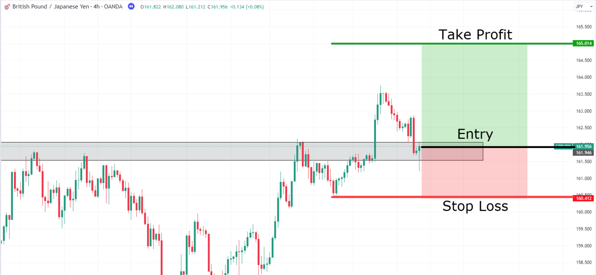
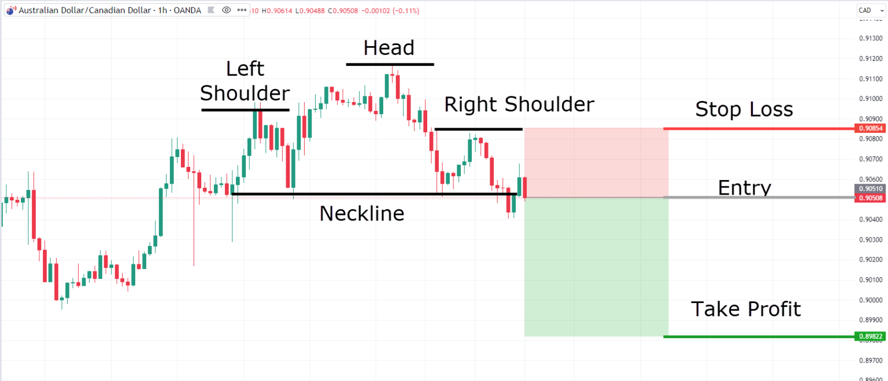

A bracket order is when you place an order and add a stop loss and take profit order along with it all at once.
Bracket orders are generally used to manage risk by capping potential losses while simultaneously securing gains.
A bracket order is an advanced, three-part order used to automate trading by simultaneously placing a primary entry order along with two opposite-side "child" orders—a profit-taking limit order and a stop-loss order. When the initial position is filled, both the profit-taker and stop-loss are activated; when one is triggered, the other is automatically cancelled.
Key Aspects of Bracket Orders:
- Three-in-One Structure: It consists of the parent order (entry) and two contingent orders (profit-taker and stop-loss).
- Automation: Eliminates the need to constantly monitor the market to close a position, securing profits and limiting losses.
- Order Types: If you go long (buy), the bracket includes a higher-price sell limit and a lower-price sell stop. If you go short (sell), it includes a lower-price buy limit and a higher-price buy stop.
- Common Use: Primarily used by active traders to manage risk in volatile markets.
- Automatic Cancellation: Once one of the exit orders (profit or loss) is filled, the other is immediately cancelled(OCO).
Bracket order for a long trade. You expect the market to go up.

Bracket order for a short trade. You expect the market to go down.
